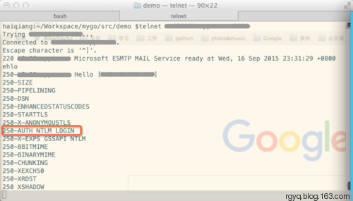
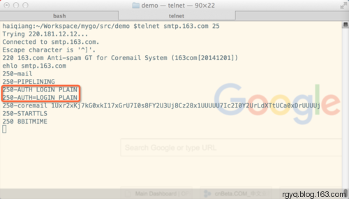

使用golang发送邮件
这两天项目中需要实现一个发送邮件的功能，这里记录下在实现过程中遇到的问题以及解决方法。
问题1——证书由不知名机构签发
报错x509: certificate signed by unknown authority，这是由于go实现的Client端默认是要对服务端传过来的数字证书进行校验，关闭即可。查看了SendMail的源码，其在建立连接的时候，需要传递一个配置对象，修改下配置，是客户端不对证书进行校验。
|
|
问题2——无法识别的认证类型
报错504 5.7.4 Unrecognized authentication type。这是由于使用的邮件发送服务不支持golang提供的认证方式（CRAMMD5和PLAIN），我司的邮件服务支持NTLM和LOGIN两种认证方式。

作为对比看下163的邮件发送服务。

这就是为啥同一个程序163可以发邮件，而自己的服务就不可以。好在go提供了一个Auth接口，可以自己实现认证。
参考
完整代码
package main
import (
"crypto/tls"
"encoding/base64"
"errors"
"fmt"
"net"
"net/smtp"
)
type LoginAuth struct {
username, password string
}
func NewLoginAuth(username, password string) smtp.Auth {
return &LoginAuth{username, password}
}
func (a *LoginAuth) Start(server *smtp.ServerInfo) (string, []byte, error) {
return "LOGIN", []byte{}, nil
}
func (a *LoginAuth) Next(fromServer []byte, more bool) ([]byte, error) {
if more {
switch string(fromServer) {
case "Username:":
return []byte(a.username), nil
case "Password:":
return []byte(a.password), nil
default:
return nil, errors.New("Unknown fromServer")
}
}
return nil, nil
}
func SendMail(addr string, a smtp.Auth, from string, to []string, msg []byte) error {
c, err := smtp.Dial(addr)
host, _, _ := net.SplitHostPort(addr)
if err != nil {
fmt.Println("call dial")
return err
}
defer c.Close()
if ok, _ := c.Extension("STARTTLS"); ok {
config := &tls.Config{ServerName: host, InsecureSkipVerify: true}
if err = c.StartTLS(config); err != nil {
fmt.Println("call start tls")
return err
}
}
if a != nil {
if ok, _ := c.Extension("AUTH"); ok {
if err = c.Auth(a); err != nil {
fmt.Println("check auth with err:", err)
return err
}
}
}
if err = c.Mail(from); err != nil {
return err
}
for _, addr := range to {
if err = c.Rcpt(addr); err != nil {
return err
}
}
w, err := c.Data()
if err != nil {
return err
}
header := make(map[string]string)
header["Subject"] = "Golang发送邮件测试"
header["MIME-Version"] = "1.0"
header["Content-Type"] = "text/plain; charset=\"utf-8\""
header["Content-Transfer-Encoding"] = "base64"
message := ""
for k, v := range header {
message += fmt.Sprintf("%s: %s\r\n", k, v)
}
message += "\r\n" + base64.StdEncoding.EncodeToString(msg)
_, err = w.Write([]byte(message))
if err != nil {
return err
}
err = w.Close()
if err != nil {
return err
}
return c.Quit()
}
func main() {
auth := NewLoginAuth("username", "password")
to := []string{"收件人邮箱"}
msg := []byte("这是一封来自go的测试邮件")
err := SendMail("smtphostwithport", auth, "发件人邮箱", to, msg)
if err != nil {
fmt.Println("with err:", err)
}
fmt.Println("please check mailbox")
}
结束